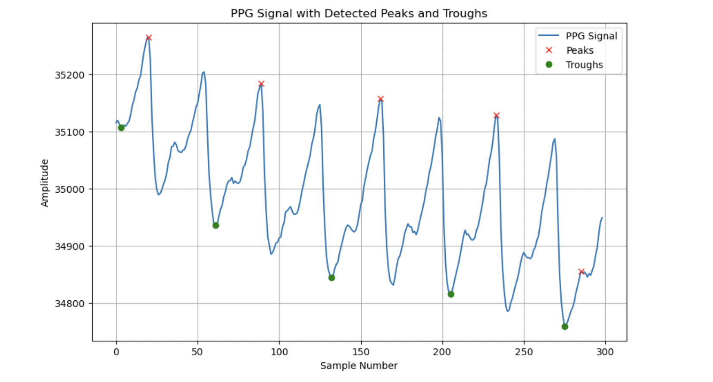
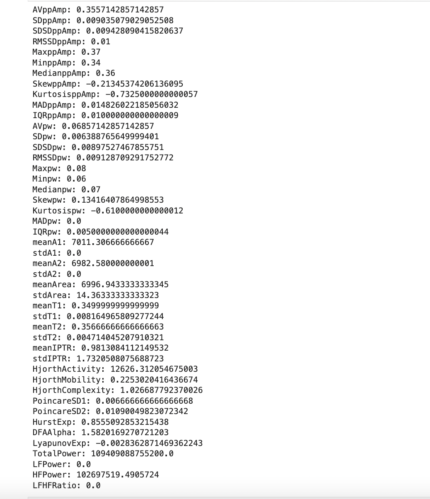
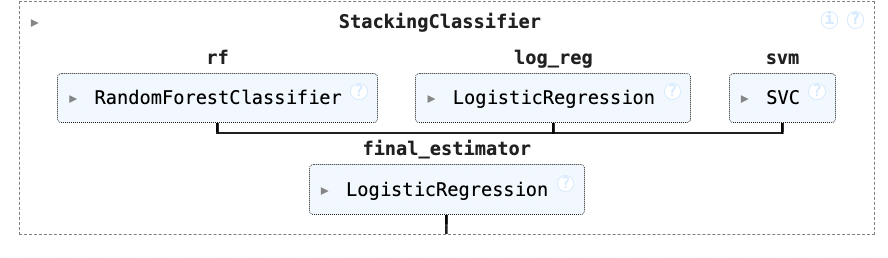
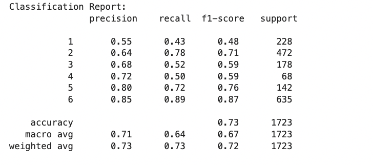
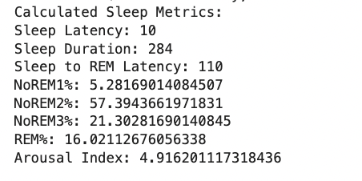
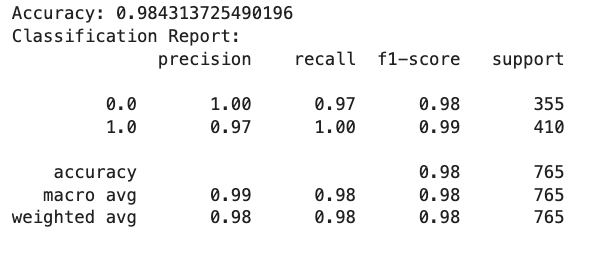

Project Overview
This project focuses on predicting different sleep stages using wearable sensor data to help detect sleep disorders such as insomnia and sleep apnea. The solution comprises of two classifying machine learning models working together. One of the models is used to classify the sleep stage of a person based on the readings from ppg sensor. The other model classifies if a person has sleep disorder or not based on the sleep metrics. The code implementation for this project can be found here
Data Description
Two different dataset are required for this project to develop the models. The ppg sensor data were obtained from here and the dataset with patients details about sleep metrics and disorder can be requested here.
Data from ppg sensor
- Stastical Features such as Average peak-to-peak amplitude Pulse width Systolic and diastolic areas Hjorth parameters Poincare features Fractal dimensions and other robust statistical features
- Sleep Stages(Target Variable): Awake, NREM1, NREM2, NREM3, REM (Multi-class)
Data from patient dataset
- Sleep metrics such as REM%, NoREM%, Latencey etc
- Disorder(Target variable) - Yes or No (Binary)
Feature Extraction (Statistical features from PPG)
As a part of the project, a pre-processing script that is capable of extracting statistical features required to predict the sleep stage was developed and tested with a sample PPG recording
The sample ppg recording was obtained from this link
The supporting script consists of class PPGFeatureExtractor which takes in the signal amplitude values as input and returns the necessary features.
Machine Learning model for sleep stage classification
The next step in this project is to develop a classifier model that is capable of finding which stage of sleep a patient is in using the extracted features.
The classes of the target variable (sleep stage) are:
- 0 - NREM1
- 1 - NREM2
- 2 - NREM3/4
- 4 - REM
- 5 - AWAKE
The detailed analysis and coding can be found in this notebook
The following models were developed as part of the analysis and tested for metrics such as accuracy, precision, recall etc to decide which is the best model.
MODELS:
- Logistic Regression
- Random Forest
- CNN
- Gradient Boosting Classifier
- Lightgbm
- Stacking Classifier
- Neural network
- LSTM
The results and report achieved for each model is shown in the notebook. In the analysis, two paths were chosen to train the model. Initially the models were trained with a single patient's data and then to make the model more generalised, a combined dataset of 10 patients were created to train and ealuate the model's performance. Among these results, the stacking classifier proved to be the best solution and the architecture and results are shown below.
ARCHITECTURE
CLASSIFICATION REPORT:
Sleep Metrics Extraction script
The script consists of class SleepMetricsExtended which accepts the classified sleep stages as input, to compute and return the sleep metrics such as REM%, NoREM%, Latency sleep etc to be fed as input for the final model.
Machine Learning model for sleep disorder prediction
This is the final part of the project wherein the calculated sleep metrics along with patient apecific data are put to use in finding if a person has sleep disorder or not.
Different classifiers were tested and the Random Classifier performed well in terms of classifying the test data.
RESULTS:
Result
All the developed models and pre-processing scripts were used to find if the patient is sufferring from sleep disorder or not. Here is the result of one such patient.
Future Works
- Both the datasets are comparitively small and are usefull only for academic purposes. Real-time large dataset need to be collected and used for product development.
- I have not used the sleep stage values that is predicted by the model for the next step in which the sleep metrics are calculated since the ppg values used by the authors of first dataset is unknown and the sample which I have taken is of different format. This should be addressed.
- A real-time dashboard should be built to monitor the sleep stages, metrics and the details regarding the presence of sleep disorder.